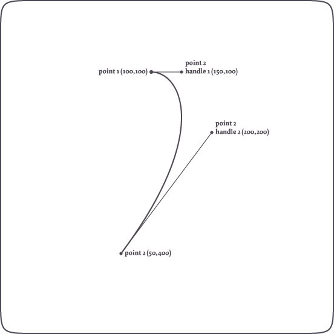

Paths
Paths in NodeBox are made up of Bezier curves. Bezier curves are commonly applied in computer graphics to draw curves. A Bezier curve is defined by a starting point, an ending point, and two control handles that describe those points' vector. The first handle describes the forward curvature of the starting point, the second handle the backward curvature of the second point.
For example:
nofill() stroke(0) autoclosepath(False) beginpath(100,100) curveto(150, 100, 200, 200, 50, 400) p = endpath()
Draws the following curve:

The path will be filled and closed by default, without a stroke color.
We use nofill(), autoclosepath() and stroke() to get a plain visualization.
Bezier math in NodeBox
In NodeBox, you have access to all the points on a path and to all of their control handles. This way, you can transform paths on the fly, and even manipulate type as well (using the textpath() comand). Additionally, you can perform a number of math operations on paths (for example finding out what the x and y coordinate would be of a point halfway down the path) and unite or intersect different paths.